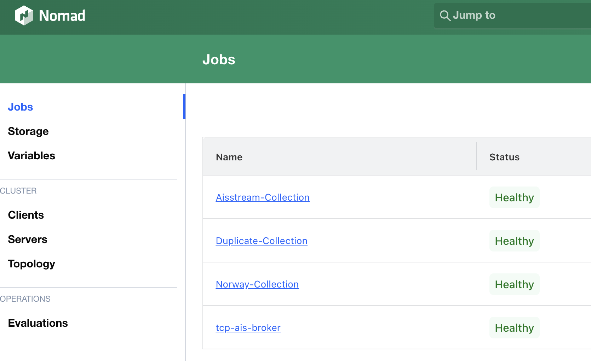
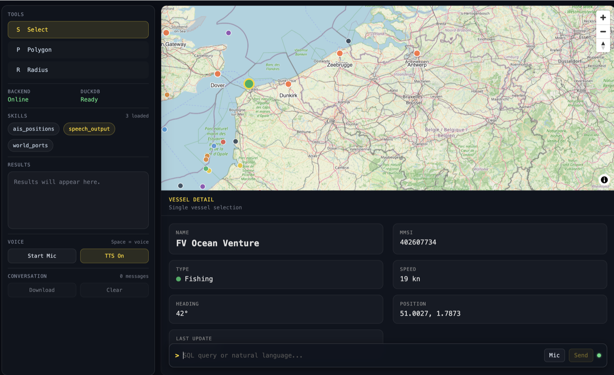
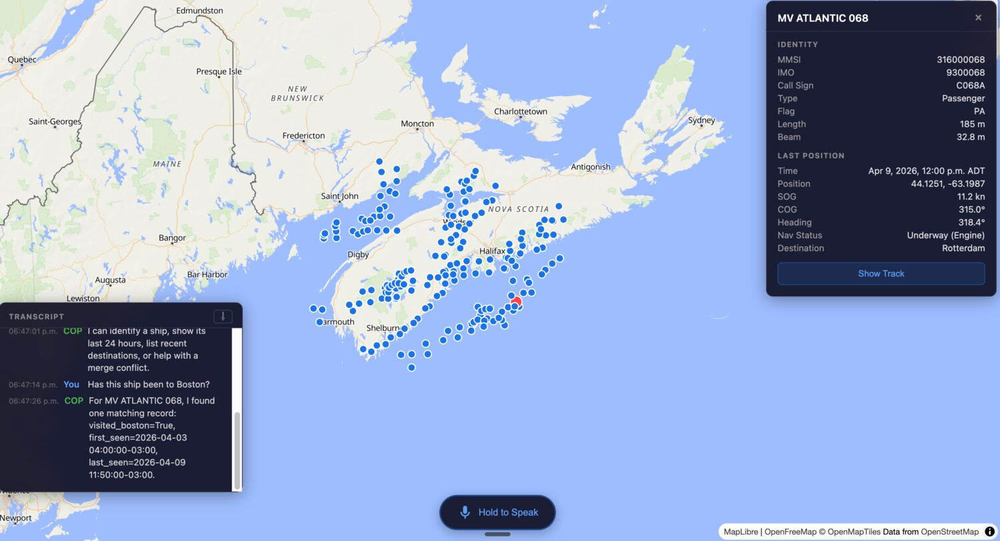
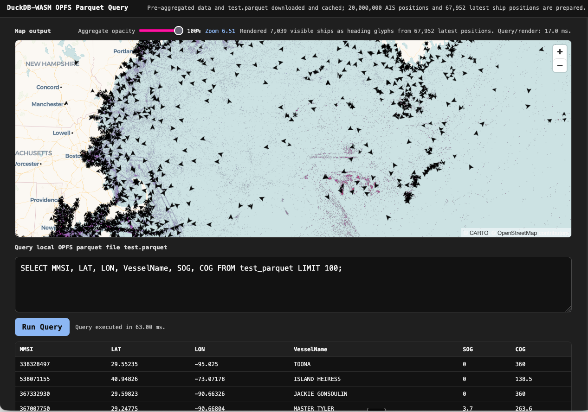
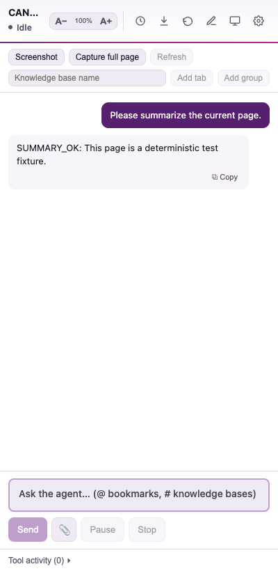
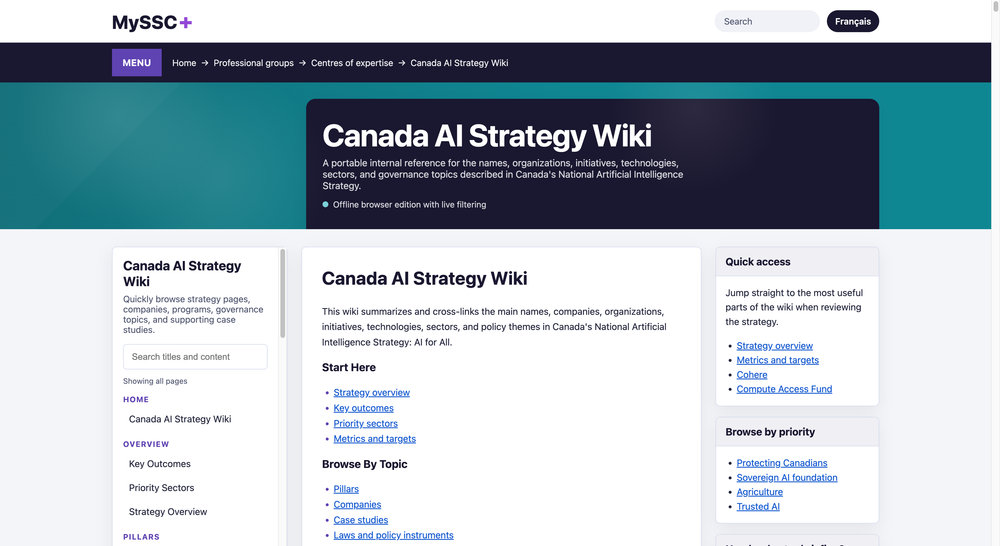

Maritime Pipeline (10 projects)
Code around collecting and storing high volume geospatial data.

collect
Rust maritime pipeline that ingests files, TCP streams, Kafka topics, and aisstream.io into Zstd-compressed Hive-partitioned Parquet. It decodes AIS and NMEA into typed datasets with local or S3 storage, incremental processing, and Prometheus metrics.
tcp-multiplexer
Lightweight TCP broker that connects to an upstream AIS feed and distributes framed NMEA messages across downstream consumers with load balancing, backpressure, and Prometheus metrics.
nmea-parser
Contributed fork of zaari/nmea-parser, a Rust NMEA 0183 crate supporting AIS VDM/VDO types 1–5 and 9–27, major GNSS sentences, and NMEA 4.10 tag blocks.
RustAISe
Multithreaded AIS NMEA stream parser that memory-maps input, decodes vessel position and static reports, and emits NDJSON. Processes roughly 9.7 million messages in 4.5 seconds.
marinecadastre_to_parquet
Multithreaded converter that extracts zipped File Geodatabases, reads every Fiona layer, records source archive and layer provenance, and aggregates the features into GeoParquet.
parquet-timings
Benchmarks 743M-row AIS data across five Hive-partitioned Parquet layouts: row-group pruning, bloom-filter skipping, and Hilbert-curve interval pruning. Achieves 2.4× geo-mean speedup over baseline.
AISArchive
Strategy for storing Automatic Identification System data in Parquet files optimised for time-range retrieval.
tiledb-spiel
Demonstration that downloads CSV data, normalises timestamps and missing values, and ingests it into a TileDB sparse array with companion scripts for reading the result.
objectstoremonitor
Ratatui dashboard that counts rows across 70,000+ Hive-partitioned Parquet objects on S3-compatible storage by fetching only file footer metadata concurrently.
extractdata
Rust TUI for extracting date ranges from Hive-partitioned Parquet on S3, either preserving the partition hierarchy or combining selected files into one Parquet file.
COP Platform (5 projects)
Experimentation around geospatial implementations — local storage, LLM integration, skills plugins.

AI-SA / Tommy3
Skill-driven geospatial intelligence platform — third iteration of the tommy family. Drop-in domain skills provide data sources, SQL logic, tool contracts, and map layers. Rust/Axum backend + SvelteKit frontend + WASM DuckDB.
tommy2
Agent-assisted Common Operating Picture for maritime awareness. Voice and text commands query AIS data through a skill-driven architecture with results rendered on an interactive MapLibre map.
RCM Visualisation
Interactive 3D visualisation of the RADARSAT Constellation Mission. Propagates all three spacecraft with SGP4 and combines orbital data with planned, active, and historical SAR acquisitions, including timeline playback and satellite camera modes.

tommy
Maritime COP prototype with MapLibre frontend, FastAPI backend, local Whisper transcription, and a deterministic assistant loop for map-aware vessel queries.

opfs-sa
In-browser geospatial visualisation using OPFS to store pre-aggregated Parquet files locally, queried with WASM DuckDB. Renders 50M+ points via WebAssembly-accelerated density tiles.
Tile Servers (3 projects)
Work to deliver vector data as raster tiles at various zoom levels.
mvt-rs-fork
High-speed Mapbox Vector Tile server in Rust (Salvo). Generates MVT from Parquet files with admin UI, JWT auth, disk/Redis caching, i18n, and multi-source layer support.
tilerust
Simple Rust tile server that reads geospatial data from Parquet, indexes with an R-tree, and serves density PNG tiles with time-range filtering.
tileshade
Python counterpart of tilerust — FastAPI/Datashader tile server serving PNG density tiles from CSV data with Web Mercator projection.
Elk Crosswalk (1 project)
Using thermal sensors to control Elk Crosswalk flashers.
Translation Comparison (4 projects)
Attempts to measure the equivalency of English/French translations on public websites.
Heritage.scrape
Scrapy/Playwright crawler that scrapes heritage websites from a URL list, extracts text, and takes full-page screenshots — handling JavaScript-rendered content.
Heritage.compare
Multilingual text comparison across English, French, and Spanish using bert-score. Reads from SQLite, scores similarity, and stores results.
Heritage.translate
Translates text between English, French, and Spanish using Hugging Face transformer models, with automatic language detection and SQLite storage.
translation_comparison
Prototype for comparing French and English pages using Azure translations, Spanish pivot translation, cosine similarity, and multilingual BERT-based scores.
AI & LLM (6 projects)
Playing with generative AI interfaces and retrieval augmented generation.
tinyllmserver
Tiny, fast, low-memory OpenAI-compatible server running local GGUF chat models (llama.cpp) and multilingual embeddings (fastembed). Tool/function calling, Metal GPU on Mac, CPU on Windows.
portablebrains
Document indexing system that ingests PDF/HTML/DOCX/PPTX/XLSX, extracts text with semantic chunking, generates ONNX embeddings, and stores in DuckDB. Includes interactive CLI and MCP server for Claude/VSCode.
ragdata-onnx
Fork of NeuML ragdata for building txtai embedding databases from common research datasets such as ArXiv and Wikipedia.

CANChat-Agent
Chromium browser extension that places an AI agent in the side panel, using the browser itself as a toolset — opens tabs, searches, reads pages (incl. behind logins), and synthesises answers. Bring-your-own-model. Includes a companion Word add-in.

canchat-v2
CANChat and Open WebUI fork customized as an extensible, self-hosted AI platform that can operate fully offline with local models, RAG, multi-model chats, RBAC, and pipeline plugins.
GenAI-Skills
Collection of reusable skill definitions for AI-powered applications — domain modules providing data sources, tools, and integration contracts for platforms like Tommy3.
Data & Tools (3 projects)
Various tools to move or transform data.
olm-exploder
Parses Outlook for Mac .olm archives and exports to EML/TXT/MD/JSON without extracting to disk. Preserves folder structure, attachments, categories, and conversation threads.

generatewiki
HTML wiki generation tool — processes structured content and renders static wiki sites.